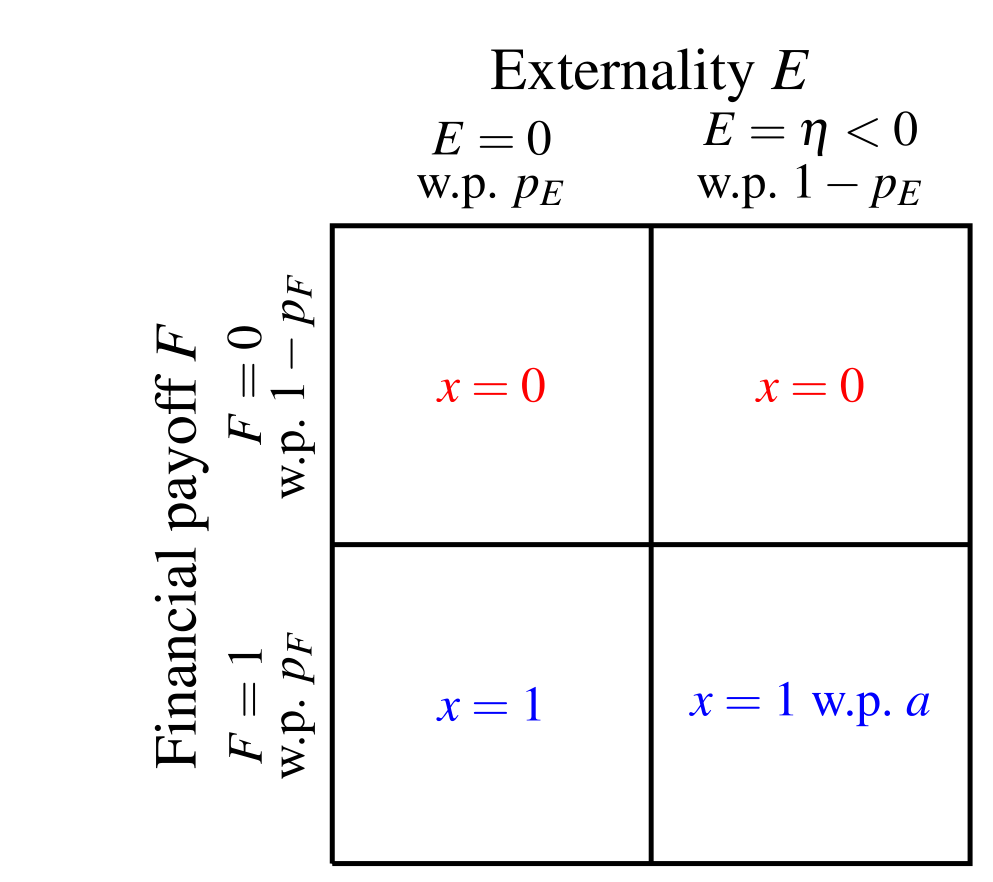
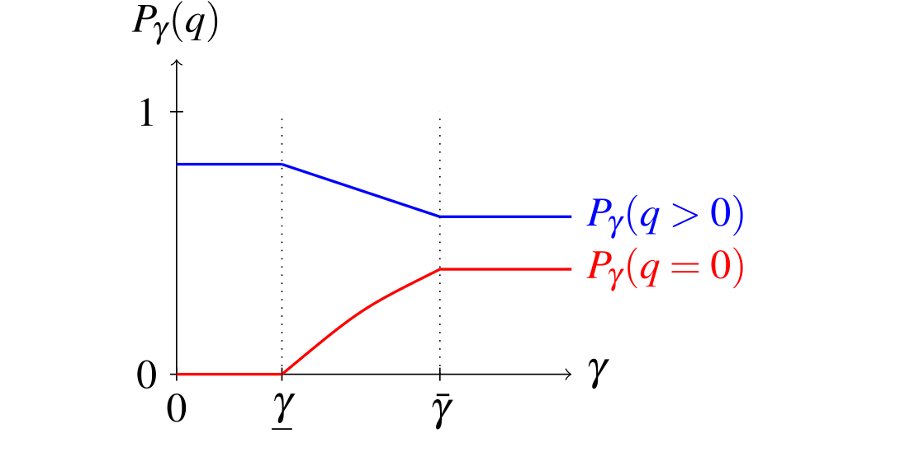
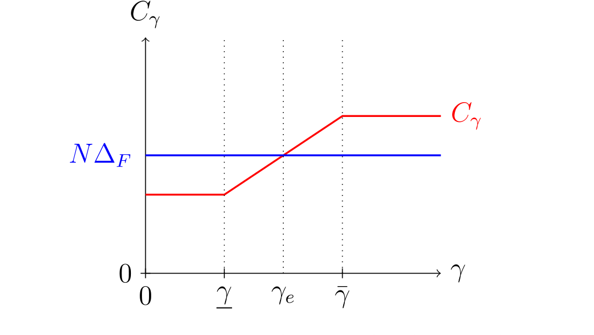
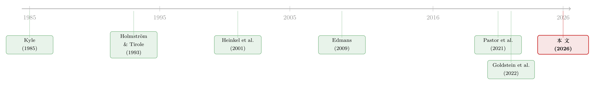

良心、价格与监督：可持续投资如何悄悄抬高了治理成本
本文读的是 Chen, Gupta & Starmans (2026, Journal of Financial Economics)：当知情投资者开始关心企业的外部性，他们的交易就不再只盯着「钱」，于是股价里关于「经营努力」的信息被稀释，激励经理变得更贵——可持续投资由此通过一条全新的「市场治理」渠道，把环境社会（ES）表现与治理质量内在地绑在了一起。
1 引言：一个被忽略的副作用
过去十年，可持续投资（sustainable investing）几乎重塑了资本市场的面貌。海量的文献都在问同一个问题：绿色资金能不能让企业少排碳、少作恶？这个问题当然重要。但它有一个被几乎所有人绕过去的盲区——
金融市场除了「给企业定价、配置资本」，还有一个古老而关键的职能：监督管理层（market monitoring，参见 Holmström 与 Tirole, 1993）。股价之所以能约束经理，是因为它是一面镜子：经理偷懒、业绩下滑，知情者就会抛售，价格就会下跌，而盯着股价发奖金的薪酬合约会让经理「肉疼」。换句话说，有信息含量的价格，是治理的基础设施。
那么，一个自然的问题是：当越来越多的知情投资者不再「纯粹为钱」而交易，而是把企业的环境社会影响也揣进了估值里，这面镜子还照得清吗？
这正是本文的切入点。作者给出的答案是反直觉的：可持续投资会削弱金融市场的治理功能。不是因为它抽走了资本，而是因为它让价格变「钝」了。
2 一个朴素的张力：当「良心」遮住了「信息」
先把直觉讲透，再上模型。
设想一个知情投资者，她私下里既看得见企业的财务前景，也看得见它的外部性。如果她只在乎钱，逻辑很简单：业绩好就买，业绩差就不买——她的买卖，是关于「财务基本面」的纯净信号。
但现在她有了社会关切（social concerns）。于是反转出现了：当一家公司业绩很好、却在大量排碳（高负外部性）时，她可能选择按兵不动——明明看到了好业绩，却因为「这公司不干净」而拒绝买入。这就是所谓的负向筛选（negative screening）。反过来，对正外部性的公司，她可能在业绩平平时也愿意买入（正向筛选，positive screening）。
无论哪种情形，结论是一样的：她的交易不再忠实地追随财务信息。市场上那个本该最懂行情的人，现在出于良心扭曲了自己的下单。于是订单流里关于「业绩、进而关于经理努力」的信息被冲淡了，股价对基本面的敏感度下降。
镜子一旦变模糊，治理的链条就开始断裂：价格对努力的信息含量↓ → 用股价激励经理的「信噪比」变差 → 激励同样的努力要花更多钱 → 当成本高到不划算，股东干脆不再激励 → 经理努力↓、业绩↓。
这就是本文的核心一句话：可持续投资抬高了所有权与控制权分离带来的代理成本（agency costs）。下面，我们把这条链条一节一节地用模型钉死。
3 模型：三个日期、一个 Kyle 市场
模型干净得近乎透明。三个时点 \(t \in \{0,1,2\}\)，无贴现，所有人风险中性。一家全股权融资、发行 \(N\) 股的公司，最初由「只关心钱」的财务投资者持有。
支付结构。 在 \(t=2\)，公司产生每股财务支付 \(F \in \{0,1\}\) 和一项外部性 \(E \in \{0,\eta\}\)。\(\eta<0\) 代表负外部性（碳排放、阿片类药物的社会危害），\(\eta>0\) 代表正外部性（碳封存、员工技能培训）。基准模型里 \(F\) 与 \(E\) 相互独立——作者刻意如此，好把「治理渠道」从「投资者据外部性更新财务预期」那条老渠道里剥离出来。
努力与激励。 在 \(t=0\)，经理选择努力 \(e_F \in \{0,1\}\)。努力（\(e_F=1\)）时高业绩概率为 \(p_F\)；偷懒（\(e_F=0\)）时概率降到 \(p_F-\Delta_F\)，但经理可私吞一份私人收益 \(B_F>0\)。外部性方面，\(E=0\) 的概率是 \(p_E\)，\(E=\eta\) 的概率是 \(1-p_E\)，基准里 \(p_E\) 外生。为了让「监督」这件事有意义，作者假设努力在社会上是有效率的：
$$N\,\Delta_F > B_F$$
也就是说，激励经理努力所创造的价值（\(N\Delta_F\)）超过它要对冲的偷懒诱惑（\(B_F\)）。这个不等式后面会反复出现——它就是图里那条蓝色基准线。
交易。 在 \(t=1\)，股票在一个离散的 Kyle (1985) 型市场里交易。一个知情投资者登场：她可能在乎外部性（社会关切强度记为 \(\gamma\ge 0\)），私下观察到 \(F\) 与 \(E\)，可以买一股或不买（\(x\in\{0,1\}\)）。还有噪声交易者提供掩护。做市商（market maker）只能看到加总的订单流 \(q\)，并据此把价格设成「给定公开信息下的期望财务支付」。
（关于做市商如何在订单流里读信息、又如何被自身的约束所限，可参见《无风险市场里的风险厌恶：是谁给做市商系上了「风险限额」这根绳》。）
关键在于知情投资者的估值：她对一股的价值，是财务支付与外部性按社会关切 \(\gamma\) 加权的组合。\(\gamma=0\) 就退化成纯财务投资者的基准世界（Section 4）；\(\gamma\) 越大，外部性在她下单决策里的权重越重。
4 识别机制：负向筛选如何稀释价格信息
现在看她到底怎么交易。以负外部性（\(\eta<0\)）为例，她的最优策略呈现出清晰的「负向筛选」结构（如图 2 所示）：业绩差（\(F=0\)）一律不买；业绩好又干净（\(F=1,\,E=0\)）果断买入；而业绩好却脏（\(F=1,\,E=\eta<0\)）时，她只以概率 \(a\) 买入——这是一个混合策略，而且 \(a\) 随 \(\gamma\) 上升而下降。

图 2：知情投资者面对负外部性时的最优交易策略——只有"业绩好且干净"才必买，"业绩好却脏"仅以概率 \(a\) 买入。
这张 \(2\times 2\) 的表格，就是整篇论文的「案发现场」。请注意右下格那个 \(x=1\) w.p. \(a\)：正是这个 \(a<1\)，把好业绩和「买入」之间的对应关系撕开了一道口子。社会关切越强，\(a\) 越小，她越频繁地对「又赚钱又脏」的公司视而不见。结果，市场看到「有人买入」时，再也不能笃定地推断「这公司业绩一定好」了。价格，钝了。
作者用两个阈值刻画了这种钝化的节奏：存在 \(\underline{\gamma}\) 和 \(\bar{\gamma}\)，当 \(\gamma\le\underline{\gamma}\) 时，社会关切还不足以改变行为，价格与基准无异；一旦 \(\gamma\) 越过 \(\underline{\gamma}\)，她开始筛选，价格的信息含量逐级下滑；越过 \(\bar{\gamma}\) 后则完全筛选。均衡价格如何随 \(\gamma\) 一步步「靠拢」、信息含量如何流失，见图 4。

图 4：均衡价格随社会关切 \(\gamma\) 的变化——订单流为正（\(q>0\)，蓝）与为零（\(q=0\)，红）两条线随 \(\gamma\) 上升而向中间收敛，价格越来越分不清好坏。
图里两条线分别是订单流为正（\(q>0\)，蓝）和为零（\(q=0\)，红）时的均衡价格。\(\gamma\) 越大，两条线越往中间收——这正是「价格越来越不能区分好坏」的几何表达。
5 从价格到激励：成本曲线 \(C_\gamma\)
接着，一个更要命的问题是：价格钝了，激励经理要多花多少钱？
本文把它精确地算了出来。先定义努力信息量（effort informativeness）\(\phi^*_\gamma\)，即在订单流为正这一最有信息的状态下，「努力」相对「偷懒」的最大似然比（Lemma 3）：
$$\phi^*_\gamma = \frac{\lambda\, p_F\, \tau^*_\gamma + (1-\lambda)}{\lambda\,(p_F-\Delta_F)\,\tau^*_\gamma + (1-\lambda)}$$
这里 \(\tau^*_\gamma\) 是知情投资者的交易强度，\(\lambda\) 是她在订单流里的占比。直觉是：她越是激进地按财务信息交易（\(\tau^*_\gamma\) 越大），高低业绩在订单流上拉开的差距越大，\(\phi^*_\gamma\) 越高，价格越能「说清楚」经理到底有没有努力。而社会关切恰恰压低了 \(\tau^*_\gamma\)——这就是 Proposition 2 的结论：当社会关切足够强，\(\phi^*_\gamma<\phi^*_0\)，努力信息量严格低于无社会关切的基准。
有了信息量，最优的激励合约也呼之欲出（Lemma 4）：只在订单流为正时发奖金，
$$W^*_\gamma(q) = \begin{cases} 0, & q=0 \\[4pt] \dfrac{B_F}{\Delta_F\,\tau^*_\gamma}, & q>0 \end{cases}$$
把它代回去，提供激励的期望总成本就是本文最核心的那一个方程：
这个式子把整条逻辑链浓缩成了一行：\(\phi^*_\gamma\) 一旦因社会关切而下滑，放大因子 \(\frac{1}{1-1/\phi^*_\gamma}\) 就被推高，激励成本 \(C_\gamma\) 随之上升。Corollary 2 把临界点也点明了：当 \(\gamma\ge\underline\gamma\) 时 \(C_\gamma\ge C_0\)；而一旦 \(C_\gamma>N\Delta_F\)——成本超过了努力带来的社会价值——股东索性放弃激励，经理不再努力。这恰好对应图 6 里成本曲线 \(C_\gamma\)（红）穿过基准线 \(N\Delta_F\)（蓝）的那个交点 \(\gamma_e\)。

图 6：激励成本 \(C_\gamma\)（红）随社会关切 \(\gamma\) 先平、后升、再封顶；与努力的社会价值 \(N\Delta_F\)（蓝）的交点 \(\gamma_e\) 即"治理崩溃"的临界点。
如图 6 所示，\(C_\gamma\) 是一条「先平、后升、再平」的折线：在 \(\gamma\le\underline\gamma\) 时贴着低位（与基准同），在 \((\underline\gamma,\bar\gamma)\) 区间内随社会关切线性攀升，越过 \(\bar\gamma\) 后封顶。它与水平线 \(N\Delta_F\) 的交点 \(\gamma_e\)，就是「治理崩溃」的临界社会关切度——右边那片区域，是可持续投资以良心之名、行损害业绩之实的地带。
6 反转：ES 与治理质量被锁在了一起
到这里，论文真正关键的一步才落下。
既然信息钝化的根源是「投资者据外部性筛选」，那么外部性的好坏，就决定了哪一类公司被监督得更松。这就在 ES 表现与治理质量之间，锻造出一条内生的链条——而且方向取决于筛选的类型：
- 负外部性 + 负向筛选：脏公司被知情者回避，它们的价格信息更差、治理更弱 → ES 与治理正相关（高 ES 公司治理更好）。
- 正外部性 + 正向筛选：好公司反而被「无脑买入」、其价格不再忠实反映业绩 → 关系反转为负相关（高 ES 公司治理更差）。
这条不对称性，是本文区别于「成本-资本」老渠道（Heinkel et al., 2001）的根本所在。在那条老渠道里，绿色资金通过抬高棕色公司的资本成本起作用；而这里，可持续投资让「激励」而非「资本」变贵，因此即便绿棕公司的预期收益完全相同、市场上根本不存在「绿色溢价」（greenium），可持续投资照样能改变实物结果。作者还顺手得到一个可检验推论：负外部性公司的股价波动率随 ES 改善而上升（信息更多），正外部性公司则相反。
更精彩的是几个反直觉的实物效应（real effects）：
「行善以获利」（doing well by doing good）会内生地出现。 一个只认钱的股东，可能主动投资去降低公司的负外部性——不是出于良心，而是因为「更干净」会把知情者请回来、让价格更灵敏、把激励成本压下去。市场治理渠道，居然给纯财务动机的股东装上了减排的引擎。
但同一台引擎，对正外部性是反着转的。 当公司产生正外部性，同样的逻辑会怂恿股东去削减善行，以换取更清澈的价格和更便宜的监督。于是无论正负，「外部性越小越好」成了共识——这给「净零（net-zero）」而非「碳负（carbon-negative）」为何能成为企业可持续承诺的焦点，提供了一个纯粹来自市场治理的解释。
退出与发声（exit vs. voice）从对手变成了搭档。 可持续投资者从高负外部性公司「退出」，反而促使财务投资者「发声」去投资减排——两类投资者之间形成互补，这与把退出和发声视为相互替代的主流叙事（如 Broccardo et al., 2022）恰好相反。
7 文献脉络
把这篇论文放回它的坐标系里看，会更清楚它补上了哪一块拼图。
最上游是两条几乎平行的河。一条是市场微观结构与价格信息：从 Kyle (1985) 的知情交易框架出发，到 Holmström 与 Tirole (1993)、Edmans (2009) 等人论证「有信息的价格能监督管理层」——这条河讲的是治理。另一条是可持续投资的实物影响：Heinkel et al. (2001) 开创的「成本-资本」渠道，到 Pastor、Stambaugh 与 Taylor (2021)、Pedersen 等人在均衡里刻画绿色溢价，再到 Oehmke 与 Opp (2024)、Levit、Malenko 与 Maug (2024) 把投资授权、投票机制纳入——这条河讲的是 ES。

两条河长期各流各的。最接近本文的，是 Goldstein et al. (2022)：他们已经指出可持续投资者的知情交易会改变价格的信息含量。但真正关键的一步在于，本文把「最优契约」嫁接了进来——只有引入用股价激励经理的合约，价格信息量的变化才会顺着薪酬这条管道，传导成真实的努力扭曲与业绩损失。它也因此与 Dow、Han 与 Sangiorgi (2024)、Strobl (2014) 那类「价格既指导投资又激励努力会产生张力」的工作形成对照：在那些模型里张力来自一般均衡，而本文的低效率是在完全相同的支付期限、局部均衡里冒出来的，机制更干净，结论也因此更尖锐。
8 评论与延伸（Q&A + 研究方向）
(a) 几个可能的疑问
Q：这和「成本-资本」渠道到底差在哪？凭什么说没有绿色溢价也能有实物效应？
差在「贵的是什么」。老渠道里贵的是资本——棕色公司融资更贵、预期收益更高，绿色溢价是其指纹。本文里贵的是激励：做市商理性地只按公开信息的期望财务支付定价，绿棕公司预期收益完全相同、不存在 greenium，但知情者扭曲的下单让价格对努力变钝，于是激励成本上升、努力下降。实物效应藏在收益分布的高阶矩（如波动率）和公司治理里，而非收益均值里。
Q：负向筛选导致「ES 与治理正相关」，正向筛选却反转成负相关。这不会自相矛盾吗？
不矛盾，恰恰是本文最漂亮的不对称性。机制始终是同一个——「知情者据外部性筛选 → 被筛的那类公司价格变钝」。负外部性下被回避的是脏公司，所以脏=治理弱；正外部性下被无脑买入的是好公司，所以好=价格不忠实=治理弱。关键不是 ES 的高低，而是「哪一类公司的买卖信号被外部性绑架了」。
Q：知情投资者只能「买一股或不买」，这种离散 Kyle 设定会不会太刀切？
这是为了解析可解（analytically tractable）而做的简化，离散 Kyle 在文献里也很成熟。作者在稳健性里放松了多处：连续外部性分布、知情者信号带噪、内生信息获取、竞争性知情者、允许卖空、做市商也在乎外部性等，核心机制都活了下来。真正不可或缺的假设其实只有一条：外部性以正概率大到足以改变知情者的下单。
Q：被动型 ESG 基金这么大，模型为什么说它们不影响这条渠道？
因为这条渠道靠的是「信息生产」。被动基金按公开规则配置资本，不向订单流注入私有财务信息，因而不改变价格的努力信息量。本文的预测因此挂钩的是主动型可持续基金的规模增长，而非被动型——这恰好把本文机制与「发声/投票」式的参与渠道（主被动都能用）区分开来。
Q：把 ES 表现与薪酬挂钩（ES-linked pay），在这个模型里到底是好是坏？
在一个扩展里它是好的，而且好得出人意料。即便控股股东不在乎外部性、经理也无法影响外部性，只要市场上存在关于外部性的公开消息，把奖金同时挂到「股价 + ES 消息」上，就能帮公司解读股价里混入的外部性噪声，反而降低激励成本、改善治理。这与「ES 挂钩薪酬更常见于治理良好公司」的经验证据一致。
Q：「行善以获利」听起来很美好，它有没有阴暗面？
有，而且很尖锐。同一台市场治理引擎，对正外部性是反着转的：它会怂恿纯财务股东去削减善行（比如砍掉本可继续扩大的正外部性项目），只为换取更清澈的价格、更便宜的监督。所以本文的规范含义不是「市场会自动向善」，而是「市场会一致地偏好更小的外部性」——净零比碳负更受青睐，哪怕碳负在社会意义上更好。
(b) 几个可能的研究问题与提案
1) 主动型可持续基金的「治理税」能不能被实证识别出来？ 【经济故事】本文给出一条可检验链条：主动型 ESG 资金占比↑ → ES 与治理相关性↑、股价波动率↓、对股价的薪酬敏感度↓、ES 挂钩薪酬更普遍。这是把一个理论机制拆成了一束可证伪的预测。 【可行性】中。需要区分主动 vs 被动 ESG 持股（13F + 晨星/LSEG ESG 评分），治理代理变量与薪酬-业绩敏感度可从 ExecuComp 构造。识别难点在于 ES 与治理的内生共动——可考虑用指数纳入/剔除带来的被动持股外生变化做对照，凸显「只有主动持股才驱动治理效应」这一本文独有的预测。
2) 把机制搬到公司债与信用市场。 【经济故事】本文是股权 Kyle 市场。但债券价格同样监督管理层，且 ESG 排除策略在信用市场（尤其高收益债）极为普遍。负向筛选若稀释了债券价格对违约相关基本面的信息含量，会不会抬高债务代理成本、影响契约条款（covenant）的设计？ 【可行性】中。需要 TRACE 交易数据 + 债券层面 ESG 评分，用价格发现指标（如信息份额）度量「债券价格信息量」。识别上可借助绿色债券与同发行人普通债的对照。与我自己关注的公司债流动性方向高度契合，doable。
3) 外资可持续投资者的「退出-发声」互补，在跨境数据里成立吗？ 【经济故事】本文预言可持续投资者从高负外部性公司退出，会促使本地财务投资者发声减排。外资机构常是 ESG 排除策略的急先锋，这给了一个天然的「退出冲击」来源。 【可行性】中。可用 FactSet/13F 的外资机构持股 + 跨国 ES 事件（如某国养老金宣布排除某行业）做事件研究，观察被退出公司后续的减排投入与本地股东行为。识别关键是外资退出相对外生于公司自身基本面——可借政策驱动的排除清单。诚实地说，「发声」的度量（实际减排投入）较难，可行性受数据限制。
4) 没有绿色溢价 ≠ 没有影响：用波动率与高阶矩做检验。 【经济故事】本文反复强调，效应可以只体现在收益分布的高阶矩而非均值。这给「找不到 greenium 就断言 ESG 无效」的流行结论提供了一个直接的反例式检验。 【可行性】高。预期收益、已实现波动率、隐含波动率都易得（CRSP + OptionMetrics）。可检验「负外部性公司波动率随 ES 改善而上升、正外部性公司相反」这一带方向的预测，识别相对干净。
5) ES 挂钩薪酬：是改善治理，还是洗绿？ 【经济故事】本文给出一个良性解释——即便经理管不了外部性，ES 挂钩薪酬也能帮市场解读股价、降低激励成本。但现实中它也可能是「洗绿」工具。两种解释的可观测含义不同：良性版本预测 ES 挂钩薪酬更多出现在「股价信息量本就被外部性污染」的公司。 【可行性】中。需要 ES 挂钩薪酬合约的细颗粒数据（如 ISS、Michaely 等人手工整理的样本）+ 公司外部性强度。识别上可比较「外部性公开消息丰富 vs 稀少」的公司，看 ES 挂钩薪酬的采用与治理改善是否如理论预测般同向。
评述者的判断。 这是一篇「小模型、大野心」的理论作品，贡献清晰：它把可持续投资的研究从「资本渠道」推进到了「治理渠道」，并用一个可解的契约模型证明，即使没有绿色溢价、绿棕公司预期收益相同，知情者的良心也会通过稀释价格信息、抬高激励成本，产生实打实的业绩与外部性后果。那条「负向/正向筛选 → ES 与治理正/负相关」的不对称性，以及「净零优于碳负」的市场治理式解释，都既新颖又落地。
要说担忧，主要在两处。其一，机制的「实物效应」依赖于一连串环环相扣的最优契约假设（薪酬只能挂股价、限额责任、风险中性），现实中经理薪酬还受会计业绩、相对绩效、隐性契约的影响，这条渠道在多大程度上是边际上「绑定」的，理论无法回答。其二，也是更要紧的——全文没有一个数字来自数据。所有「量级」都是模型对象（\(\phi^*_\gamma\)、阈值 \(\underline\gamma,\gamma_e,\bar\gamma\)），它给出的是一束漂亮的、待检验的预测，而非已被检验的事实。
所以我最想看到的下一步，是有人把第 8(b) 节里那几条预测真的拽到数据里去：尤其是「只有主动型 ESG 持股驱动治理效应、被动型不驱动」这条——它几乎是为本文量身定做的证伪实验。如果它在数据里站住了，这篇论文就从一个优雅的可能性，变成一个关于资本市场的硬事实。
参考文献
- Broccardo, E., Hart, O., Zingales, L. (2022). Exit versus voice. Journal of Political Economy 130(12), 3101–3145.
- Chen, A., Gupta, D., Starmans, J. (2026). Sustainable investing and market governance. Journal of Financial Economics 181, 104273.
- Dow, J., Han, J., Sangiorgi, F. (2024). The short-termism trap: Catering to informed investors with limited horizons. Journal of Financial Economics 159, 103884.
- Edmans, A. (2009). Blockholder trading, market efficiency, and managerial myopia. Journal of Finance 64(6), 2481–2513.
- Heinkel, R., Kraus, A., Zechner, J. (2001). The effect of green investment on corporate behavior. Journal of Financial and Quantitative Analysis 36(4), 431–449.
- Holmström, B., Tirole, J. (1993). Market liquidity and performance monitoring. Journal of Political Economy 101(4), 678–709.
- Kyle, A.S. (1985). Continuous auctions and insider trading. Econometrica 53(6), 1315–1335.
- Levit, D., Malenko, N., Maug, E.G. (2024). Trading and shareholder democracy. Journal of Finance 79(1), 257–304.
- Oehmke, M., Opp, M.M. (2024). A theory of socially responsible investment. Review of Economic Studies 92(2), 1193–1225.
- Pastor, L., Stambaugh, R.F., Taylor, L.A. (2021). Sustainable investing in equilibrium. Journal of Financial Economics 142(2), 550–571.
- Pedersen, L.H., Fitzgibbons, S., Pomorski, L. (2021). Responsible investing: The ESG-efficient frontier. Journal of Financial Economics 142(2), 572–597.
- Strobl, G. (2014). Stock-based managerial compensation, price informativeness, and the incentive to overinvest. Journal of Corporate Finance 29, 594–606.